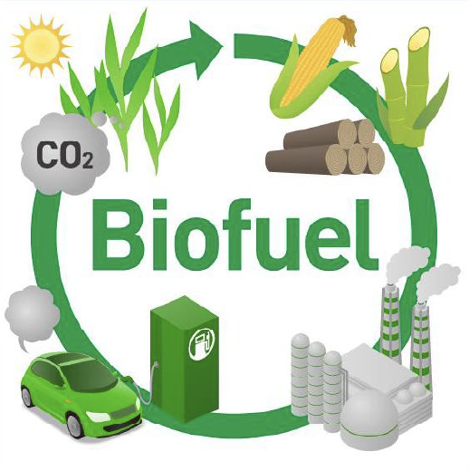

The original cultivation of sugarcane is believed to have been in
the Indian subcontinent and Southeast
Asia. The earliest varieties of sugarcane were wild and grew in tropical climates. Archaeologists
and
historians, through the study of ancient texts and sites, have found that sugarcane was used by
local
people for consumption and the production of syrup as early as around 2000 BCE.
© Map showing the spread of sugarcane in Asia, Oceania, and Africa after origin in New Guinea. Map
by Obsidian Soul, after a map by Daniels and Menzies, 1996.
Sugarcane originally originated in the Indian subcontinent and Southeast Asia, especially in
regions like New Guinea, India, Bangladesh, and Malaysia, where it grew naturally in the
tropical climate. In the 7th century, Arab merchants brought sugarcane cultivation
techniques to the Middle East and North Africa. Sugarcane was further promoted and improved,
and the process of extracting sugar was developed. The Arabs made several improvements to
the methods of producing sugar syrup and sugar, making it widely popular in the region.
Later, the techniques of sugarcane cultivation and sugar production gradually spread to
Western Europe, particularly to Spain and Portugal. During the Middle Ages, European
societies began to learn about and adopt sugarcane sugar-making technology, although the
spread of this knowledge was initially slow.
In the 19th century, with the advancement of industrialization and the growing demand for
sugar, the cultivation of sugarcane and sugar production expanded further into more tropical
regions, including the Philippines, Indonesia, Australia, South Asia, and Africa. By the end
of the 19th century, European countries established large sugarcane plantations, especially
in Asia, the Caribbean, and South America. As technology improved and the demand for sugar
increased, sugarcane not only became the main source of sugar globally, but also led to the
production of many industrial by-products, such as molasses and alcohol.
Nowadays, sugarcane is grown almost everywhere in the tropics and subtropics, especially in
countries such as Brazil, India, China, Thailand and Australia, which remain the world
largest sugarcane producers. With the growing demand for bioenergy, sugarcane is also widely
used to produce alternative energy sources such as ethanol.
EXPLOITATION OF INDIGENOUS COMMUNITIES
01
Colonizers seized fertile lands from indigenous populations to establish large-scale sugarcane
plantations, displacing communities from their ancestral homes.
Indigenous workers were underpaid or not paid at all, leaving them in perpetual poverty while
plantation owners amassed wealth.
02
03
Indigenous people were often coerced into working on sugarcane plantations under harsh conditions,
sometimes through systems of slavery, indentured servitude, or exploitative labor arrangements.
Plantations consumed vast amounts of water and degraded the soil, leaving indigenous communities
with fewer natural resources for their own subsistence.
04
Sugarcane cultivation was closely associated with the slave trade, especially in the
Caribbean,
South America, the southern United States and some parts of Asia and Africa. From the 16th
century onwards, sugarcane cultivation expanded rapidly in the European colonies and became
a
central industry in sugar production.
Sugar was favoured by the European aristocracy as a luxury item and demand gradually
increased.
To meet this demand, the colonies needed a large labour force. To meet the demand for labour
on
the sugar plantations, the European colonists initiated the massive transatlantic slave
trade.
This trade transported thousands of African slaves from the coast of West Africa to the
Americas.
The slaves were forced to labour on sugarcane plantations, in sugar mills, mines and other
economic activities. These African slaves were forced to work in the cultivation of
sugarcane
and the refining of sugar under extremely harsh labour conditions, which resulted in an
extremely high mortality rate.
Sugarcane plantations in the Caribbean, Brazil and South America became the centres of world
sugar production, and the economies of these regions depended almost exclusively on
sugarcane
production and sugar exports, which underpinned the capitalist economies of Europe and
colonial
expansion.
© Slaves cutting sugar cane, plate IV of the series ‘Ten Views in the
Island of Antigua’ by
William Clark, London, 1823.
© Source: Harper's Monthly Magazine vol. 9, pg. 760, 1853 (Slavery
Images, public domain).
The combination of sugarcane cultivation and slavery had a profound impact on world history.
Not
only did it shape the economic and social structures of the colonies, but also influenced
culture, race relations and the political landscape.
TRADITIONAL USE
Sugar Production
© Engraving depicting sugar-making on Sicily around 1537. Engraving by
Jan Collaert, from New Inventions of Modern Times, ca. 1600.
© A sugar refinery, image from 1762. Image from an encyclopedia by
Denis Diderot, 1751 to 1775 (Slavery Images, public domain).
The most famous use of sugarcane is the extraction of sugar. Around 500 B.C., the Indians
had
learnt to extract sugar from sugarcane and had invented preliminary methods of refining
sugar.
Demand for sugar grew rapidly in the 16th century with the increased demand for the sweet
flavour in Europe.
From the 16th to the 18th centuries, sugar production moved on a large scale into the
Americas,
the Caribbean, and South Asia as European colonial expansion established sugarcane-based
plantation economies.
Sugar mills in these regions facilitated the industrialisation of sugar production through
the
use of large amounts of slave labour. Sugar became an important commodity in global trade,
and
the sugar mills as well as the sugarcane plantations were important pillars of the colonial
economy.
With technological advances and industrialisation, sugar mills gradually evolved from small
artisanal workshops to large-scale production enterprises.
After the sugarcane is transported from the plantations to the sugar mills, it needs to be processed
through a number of steps, such as pressing, boiling and crystallisation, a process that requires a
large amount of labour. Negroes were mainly engaged in cleaning, carrying, boiling and filtering in
the
sugar mills, operating high-temperature equipment and facing great health risks. Sugar production
was
gradually mechanised, especially in the 19th century, when sugar mills began to adopt modern
equipment.
This mechanised production not only increased sugar yields, but also reduced production costs,
allowing
sugar to begin to move from a luxury product to a mass consumer product. With the development of
sugar
production technology, it gradually became an important commodity in global trade.
Rum is an alcoholic beverage whose origins can be traced back to the Caribbean in the 17th
century. In the beginning, rum production was invented by colonists in the Caribbean. These
colonists discovered that molasses, a by-product of sugar cane, could be fermented and
distilled
to produce a drink with an alcoholic content. As rum production expanded in the Caribbean,
the
demand for rum grew rapidly in the European market.
Especially in the late 18th and early 19th centuries, rum became one of the most important
commodities for maritime trade and navigation in Britain, France and Spain. Sailors and
merchants at sea also often used rum as a regular drink. Many crews carried rum as a
substitute
for water during the voyage, as it could be preserved for long periods of time and was
thought
to have some antiseptic properties.
© Workers are making rum in the factory.
THE ROAD TO
SUGARCANE
GROWING
Sugarcane, a tropical giant grass from the family Poaceae, is increasingly being grown
worldwide. In addition to being used to make sugar, of which global consumption is rising, it
has a growing range of uses, including for energy production.
Global sugarcane production totals over 194 million tonnes in
2024,
with Brazil producing a whopping
752.9 million tonnes. India is the leading producer after Brazil with a total production of
405.4
million tonnes.
The United States of America, though one of the largest consumers of sugar, is the eleventh
largest producer of sugarcane in the world with 29 million tonnes, lagging behind countries like
Thailand, China and Pakistan. Asian countries such as India and China contribute significantly
to global sugarcane production, totalling more than 500 million tonnes of sugarcane.
© World Sugarcane Production in 2024. Map from Data Pandas.
A Range Of Challenges
Between the early 1960s and 2020, the total area planted with sugarcane world-wide increased fourfold,
with numerous impacts on the territories concerned: displacement of activities and communities, land
tenure and fresh water supply issues, risks of exclusion for vulnerable population groups and threats to
food security. In a context of global change and climate change, the sugarcane value chain also faces a
number of challenges. On a bio-physical and technological level, there is a need to adapt sugarcane
growing methods, to preserve soils, biodiversity and water resources and reduce chemical and atmospheric
pollution.
Sugarcane specially cultivated in greenhouse.
Selection before planting out pre-germinated cuttings
From a socioeconomic, political and institutional point of view, developing new sugarcane products
changes traditional structures and raises a range of questions in terms of economic and social
sustainability. There are many different visions of sugarcane cultivation: numerous countries (the US
and Latin American countries) rely on continued intensive pesticide use, with the creation of
genetically modified varieties resistant to pests and diseases or glyphosate (herbicide) for instance.
Europe (in its ultraperipheral regions) favours more environmentally friendly agriculture, with ever
less pesticide use and the development of agroecological practices, along with molecular marker assisted
breeding operations to produce orange rust-resistant varieties, for instance. The situation varies in
Africa, according to how dependent producing countries are on the sugar market, to their production
structure (sugar companies, small scale producers, or a mix of the two), to how developed the industrial
and research sectors are, etc.
PROMOTING THE SUGARCANE FOR THE FUTURE
01
Agricultural Technology
Productivity
Using technologies such as the Internet of Things, artificial intelligence and big data to
improve the efficiency of sugarcane cultivation. Optimise irrigation, fertiliser application and
pest control by accurately monitoring soil quality, climatic conditions, crop growth and other
factors. Develop new varieties of sugarcane adapted to harsh climates and infertile lands to
meet the challenges posed by global climate change and improve the stability and yield of
sugarcane cultivation.
Bagasse is rich in cellulose and can be used for power or heat generation by incineration or
conversion to solid fuel. Meanwhile, bagasse can also be converted into ethanol through
enzymolysis, fermentation and other processes for use as a biofuel, further replacing petroleum
energy and promoting green and low-carbon development. Not only can it enhance the diversity of
the sugarcane industry, but it is also a key step in promoting sustainable agricultural
development.
Besides sugar and alcohol, sugarcane can also be used to produce ethanol, chemical products,
plastics and so on. Through diversified product development, the economic value of sugarcane is
increased and the added value of the industry is enhanced.
For International Markets
Expanding export markets: Major sugarcane producing countries (e.g. Brazil, India, China, etc.)
should actively explore emerging markets, especially countries along the ‘Belt and Road’ route,
to increase the international market share of sugarcane and related products.
21st Century Usage：Sugarcane Ethanol
Sugarcane Biofuel refers to bioethanol produced from sugarcane, which is a renewable and
environmentally friendly energy source. It is one of the most widely used biofuels globally,
particularly in countries like Brazil, which have large-scale sugarcane production and advanced
biofuel industries. Unlike petroleum-based fuels, sugarcane biofuel is renewable and can be
produced continuously as long as sugarcane is grown and harvested. This reduces dependence on
finite fossil fuel resources. It is highly energy-efficient, and sustainable, and significantly
reduces greenhouse gas emissions when compared to fossil fuels.
ADVANTAGES OF BIOETHANOL
It Reduces Co2 Emissions
Although it produces CO2 when burned, it actually comes from the CO2 absorbed by the plant as
it grows, and it is also much lower than that generated by fossil fuels; the difference ranges
from 19% (from corn crops) to 86% (from biomass residues).
It Boosts The Local Economy
The increase in the demand of this fuel brings with it greater employment opportunities. As
well as needing personnel to work at the bioethanol plants, jobs are created in the agricultural
sector, to supply the raw materials and other related sectors.
It Doesn’t Generate Waste
Its combustion doesn’t generate smells or waste, and the CO2 generated can be captured and used
in other industrial applications, such as the carbonation of drinks or freezing. For example, it
allows the amount of rubbish generated in an urban center to be reduced.

RESOURCES
Website
1. EARTH AT HOME. https://evolution.earthathome.org/grasses/andropogoneae/sugarcane-history/
2. Sugarcane (2024) Ethanol - SugarCane. https://www.sugarcane.org/sugarcane-products/ethanol/.
3. Cirad (2023) Plant and uses.
https://www.cirad.fr/en/our-activities-our-impact/tropical-value-chains/sugarcane/plant-and-uses.
4. British colonies - Britain and the Caribbean - National 5 History Revision - BBC Bitesize (2024).
https://www.bbc.co.uk/bitesize/guides/zjyqtfr/revision/2.
5. Petruzzello, M. What’s the difference between cane sugar and beet sugar?
https://www.britannica.com/story/whats-the-difference-between-cane-sugar-and-beet-sugar.
6. Willy (2024) The origin of sugarcane and the history of sugar mills in colonial Brazil.
https://www.bahia.ws/en/history-of-the-emergence-of-the-sugar-mill-in-colonial-brazil/.
7. Rum is the Word. https://www.enotriacoe.com/blog/rum-is-the-word.
8. Royal Rum Society, Royal Rum SocietyTM. https://royalrumsociety.com/history-1800s-1.
9. Data Pandas.Sugarcane Production by Country.
https://www.datapandas.org/ranking/sugarcane-production-by-country
10. BioEnergyTimes (2024)
https://bioenergytimes.com/major-relief-for-sugar-mills-ethanol-production-from-sugarcane-juice-and-b-heavy-molasses-allowed/.
11.What is bioethanol and what is it used for? (2023).
https://www.repsol.com/en/energy-and-the-future/sustainable-mobility/bioethanol/index.cshtml.
Article
1. Brown, C. A. 1933. The origins of sugar manufacture in America. II. A sketch of the history of sugar
refining in America. Journal of Chemical Education 10: 1-23: 421-427.
2. Rönnbäck, K. 2023. Sugar plantation slavery. Oxford Research Encyclopedia, African History.
https://doi.org/10.1093/acrefore/9780190277734.013.908
3. Galloway, J. H. 2005. The modernization of sugar production in Southeast Asia, 1880-1940. The
Geographical
Review 95: 1-23.
4. Rolph, George (1873). Something about sugar: its history, growth, manufacture and distribution. San
Francisco, J. J. Newbegin.
5. CIRAD, sugarcane roadmap summary.The road to sustainable sugarcane growing[2023-2033].